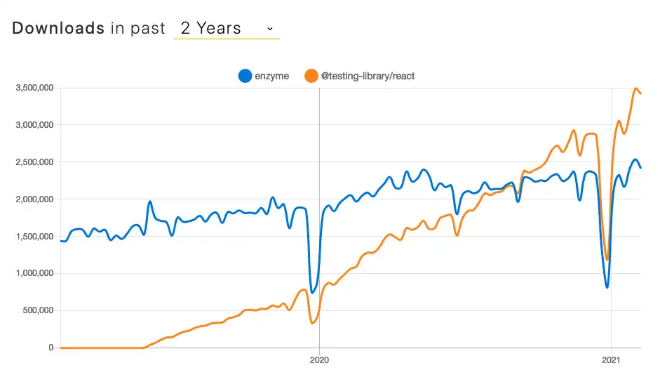

@testing-library/reactimport MyComponent from './MyComponent'
describe('MyComponent', () => {
it('should call #handleClick', () => {
const handleClick = jest.fn()
const wrapper = shallow(<MyComponent onClick={handleClick} />)
wrapper.find('button').simulate('click)
expect(handleClick).toHaveBeenCalled()
})
})
Shallow rendering is useful to constrain yourself to testing a component as a unit, and to ensure that your tests aren't indirectly asserting on behavior of child components.
-- Enzyme docs
With shallow rendering, I can refactor my component's implementation and my tests break. With shallow rendering, I can break my application and my tests say everything's still working.
-- Kent C. Dodds
shallow tests are brittlemount anyway@testing-library/reactenzyme vs. @testing-library/react